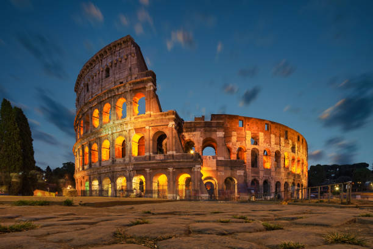
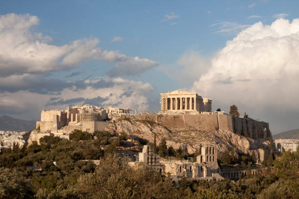
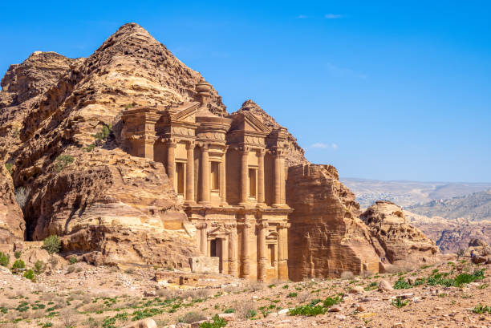
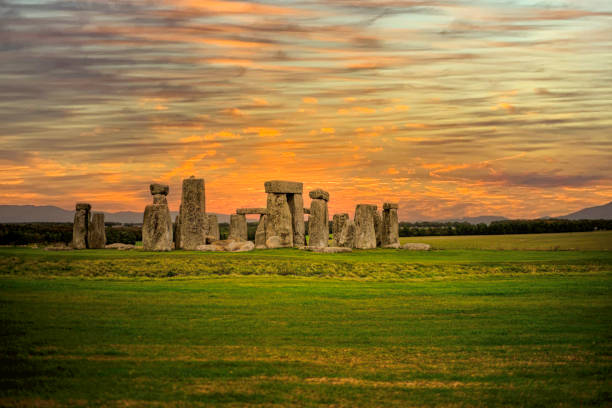
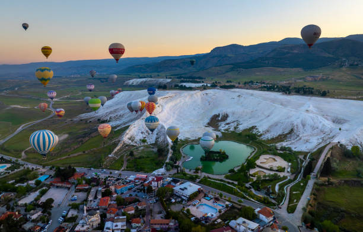

Great Pyramid of Giza — Egypt. “Ancient marvel of engineering.”Chichen Itza — Mexico. “Temple of Kukulkan rising from the jungle.”

Colosseum — Rome, Italy. “Echoes of gladiators and empire.”Great Wall — China. “A dragon across mountains.”Machu Picchu — Peru. “City in the clouds.”

Parthenon — Greece. “Crown of Athens.”

Petra — Jordan. “Carved in rose-red stone.”

Stonehenge — England. “Circle of ancient mystery.”Taj Mahal — India. “Love immortalized in marble.”Angkor Wat — Cambodia. “Temple of dawn and devotion.”
Natural Wonders
Amazon Rainforest — South America. “Lungs of the Earth.”Antelope Canyon — USA. “Waves of red sandstone.”Aurora Borealis — Arctic. “Dancing lights of the night sky.”Great Barrier Reef — Australia. “A kaleidoscope beneath the waves.”Iceland Geysers — Iceland. “Earth breathing steam.”Iguazu Falls — Argentina/Brazil. “Nature’s grand symphony.”Mount Everest — Nepal. “Top of the world.”Mount Fuji — Japan. “Grace in symmetry.”

Pamukkale — Turkey. “Terraces of cotton and light.”Sahara Desert — North Africa. “Endless sands of silence.”
Iconic Modern Wonders
Burj Khalifa — UAE. “Touching the sky.”CN Tower — Canada. “Beacon over Toronto.”Eiffel Tower — France. “Steel poetry over Paris.”Empire State Building — USA. “Icon of the skyline.”Golden Gate Bridge — USA. “Suspended in fog and grace.”Guggenheim Museum — USA. “Curves of creativity.”Sagrada Familia — Spain. “A dream carved in stone.”Shanghai Tower — China. “Spiral of progress.”Sydney Opera House — Australia. “Architecture in motion.”The Vessel — USA. “Stairway to the skyline.”


.jpg)